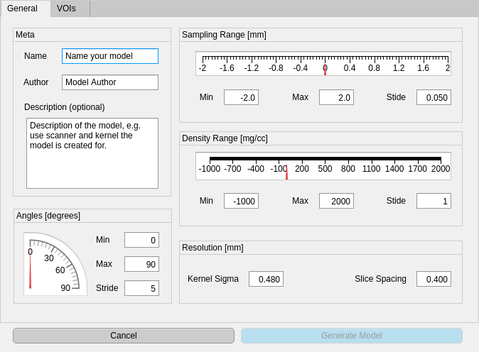
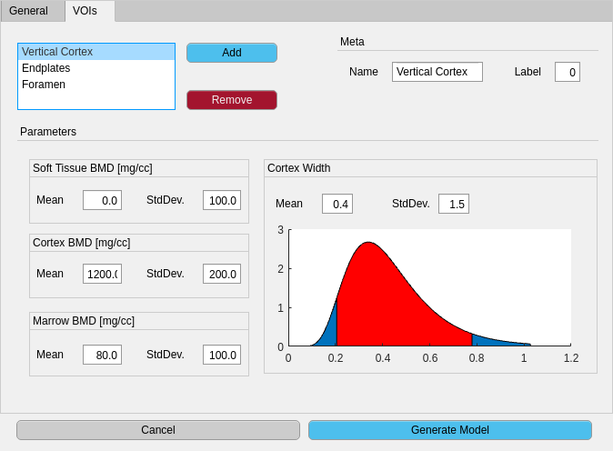

|
CortidQCT
1.2.2
|
|
CortidQCT
1.2.2
|
A tool for automatic cortical shape identification for QCT scans.
This software is based on "**An Analysis by Synthesis Approach for Automatic Vertebral Shape Identification in Clinical QCT**" by *Stefan Reinhold, Timo Damm, Lukas Huber, Reimer Andresen, Reinhard Barkmann, Claus-C. Glüer and Reinhard Koch*, accepted for publication in Springer LNCS, presented on "German Conference on Pattern Recognition 2018". arXiv
The current release is v1.2.2:
Older releases can be found here.
The build instructions below are for *NIX (Unix/Linux/macOS) systems only. For Windows build, the configuration steps (1 to 4) should be the same, but the compilation step might be different, dependent on the compiler used.
CortidQCT uses the Hunter package manager to manage its dependencies. Therefore, it's not required to manually install any dependecies. Hunter builds and installs all dependencies automatically in the ${HOME}/.hunter directory. This can be changed by setting the HUNTER_ROOT environment variable.
It is strongly recommended to install CortidQCT to a custom location. For this, set the CortidQCT_ROOT environment to the desired path.
Runcmake ``bash cmake -DCMAKE_INSTALL_PREFIX=${CortidQCT_ROOT} -DCMAKE_BUILD_TYPE=Release ../ ```Navigate to the installation folder in MATLAB, then open matlab/CortidQCT.prj. This opens the toolbox packaging dialog. Click 'Package' and close the dialog. Double click the new file CortidQCT.mltbx to install the toolbox.
Using CortidQCT is a two step process. First a model for each different protocol must be generated using the MATLAB toolbox. After that, either the command line interface (CLI) tool, the C+++ library or the MATLAB interface can be used to identify the cortex using the generated model.

|

|
|---|---|
| General model parameters dialog | Per VOI parameters dialog |
In MATLAB run ```matlab CortidQCT.CreateModel ``` to start the model creation UI. On the first screen (general tab, see left screenshot above) meta and general information about the model can be entered. In the VOIs tab (see right screenshot above), per VOI prior parameters can be entered. Ensure that each VOI gets an unique label. Since the interpretation of the parameters of log-normally distributed cortex width parameter is not very intuituve, a plot of the current PDF is plotted in the bottom right. The red shaded region shows the 95% confidence interval.
After specifying all VOIs, click the Generate Model button start start the generation process. Depending on the hardware, this process may take a while. When the model generation completed, a green Save Model button will appear. Ensure to save the model before quitting the dialog.
You can either write your own program that uses the C++ library, use the built-in CLI tool or use the MATLAB interface that comes with the toolbox.
After compilation the CortidQCT_CLI executable can be found in build/app. It requires at least three parameters:
```bash app/CortidQCT_CLI <configurationFile> <inputVolume> <outputMesh> [outputLabels] ```
The API Reference can be found here.
Available since Version v1.1.0. See the C-Bindings module in the API Reference for details. An example can be found in bindings/C/examples/cli.c.
Since version 1.2.0 CortidQCT also has MATLAB bindings, enabling the direct interaction with the library from within MATLAB.
An example implementation of the CLI interface can be found in examples/CortidQCT_cli.m: ```matlab function [resultMesh, volume] = CortidQCT_cli(configFilename, volumeFilename, outputMeshFilename, varargin) CORTIDQCT-CLI Identifies the cortical shape of the given volume and writes the output to the given file
import CortidQCT.lib.*;
% Load volume volume = VoxelVolume.fromFile(volumeFilename);
% Create MeshFitter using config file fitter = MeshFitter(configFilename);
% fit result = fitter.fit(volume);
% write output result.mesh.writeToFile(outputMeshFilename, varargin{:});
% plot results volume.plot; h = result.mesh.plot; axis equal colormap gray
h.FaceColor = 'g'; h.FaceAlpha = 0.3;
resultMesh = result.mesh;
end ``` This function mimics the CLI application with additional visualization of the result:
The main purpose of the configuration file is to specify the reference mesh and the model file. Additionally some parameters can be customized. The configuration file must be in the YAML format.
The following snippet defines a refernece mesh path/to/reference/mesh.coff consisting of a colored object file format mesh. Here each vertex color corresponds to a model label. The mapping is defined in the colorToLabelMap section. The custom mapping is supplied in the map section. Each element must be a two element list that contains a three element list and a single ineteger label: [[R, G, B], Label].
The origin: centerd parameter states that the centroid of the reference mesh should be moved into the center of the image, which is the default behaviour. ```YAML referenceMesh: mesh: path/to/refernce/mesh.coff colorToLabelMap: type: custom map:
The measurement model is specified by the path to the previously generated model file: ```YAML measurementModel: path/to/my/model.yml ``` If a relative path is given, it is interpreted as relative to the configuration file.
There are several optional parameters that can be tuned: ```YAML sigmaE: 5.4 sigmaS: 2 maxIterations: 100 minNonDecreasing: 3 decay: 0.1 ```
sigmaE: Scale parameter of the ARAP shape prior energy term (defaults to 5.4). Note that due to a slightly different implementation, the parameter is not exactly like in the paper. If sigmaS: Displacement prior scale parameter, defaults to 2 (see paper).maxIterations: Maximum number of iterations, defaults to 100.minNonDecreasing: Minimum number of iterations before entering decay mode, defaults to 10decay: Decay factor used in decay mode, defaults to 0.9.Since an approximate alternating optimization scheme is used, it might happen, that the optimizer oscillates between two solutions and never completely converges. To circumvent this oscillation, the mean absolute displacement is monitored. Everytime it doesn't decrease for at least minNonDecreasing iterations, the current sigmaS is multiplied by decay, resulting in a decay of step size over time, enforcing convergence.
This implementation is, opposed to the original prototype underlying the publication, highly optimized. While the original prototype required a few minutes for about 50 iterations, this implementation can make 50 iterations in about 20 seconds (on an Intel(R) Core(TM) i7-8700K CPU @ 3.70GHz).
The optimization time does of course depends on the size of the model and the scans.
 1.8.6
1.8.6